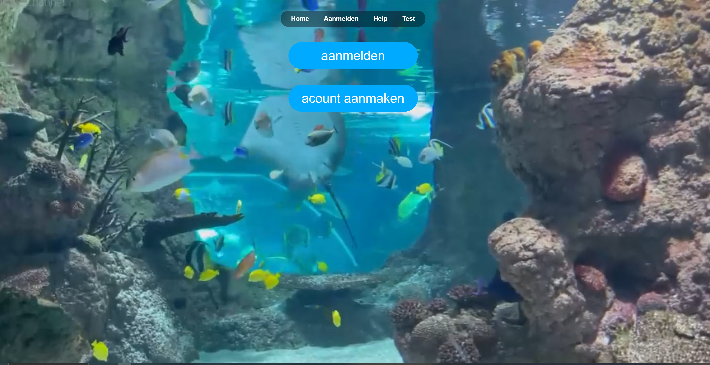
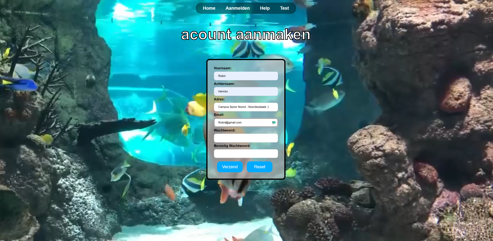
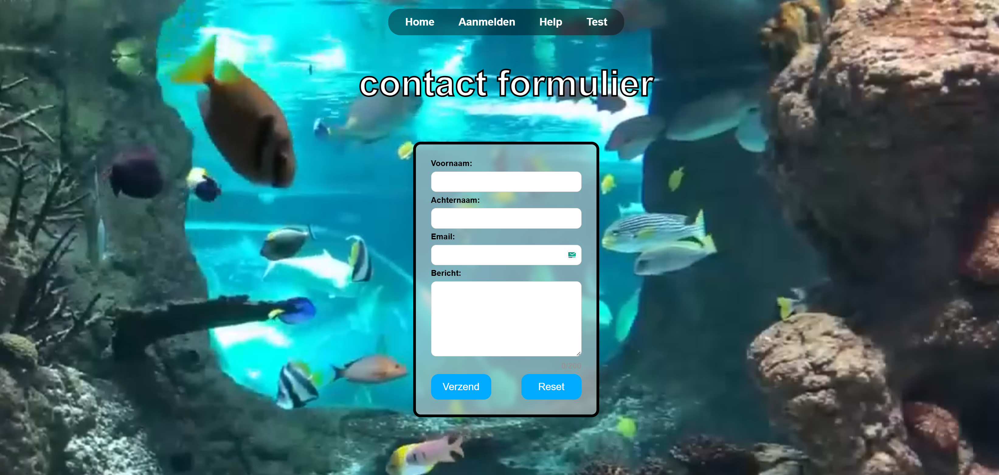
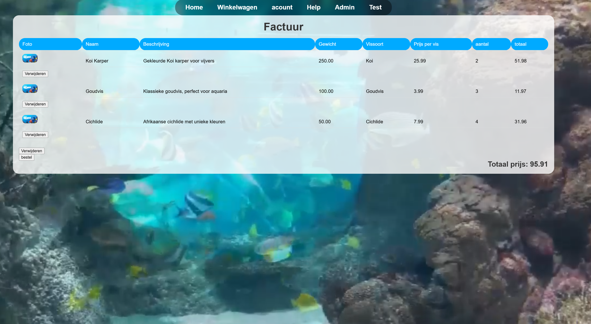
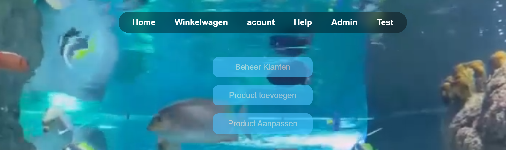
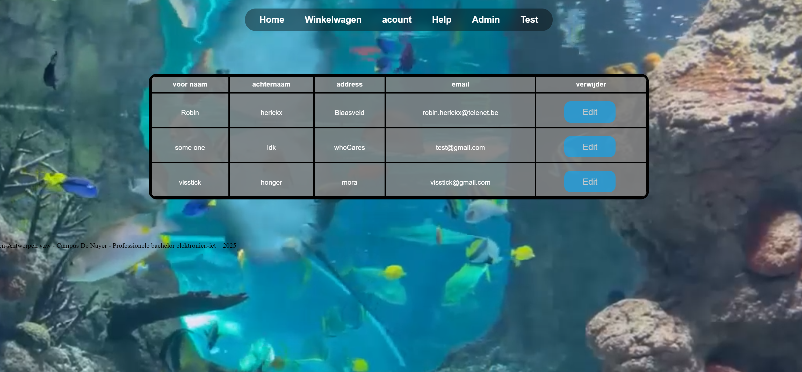

Webshop






Opmerking: in de screenshots hierboven staat overal dezelfde afbeelding van Finding Nemo. Dat is een placeholder voor de foto's van de echte vissen en producten. Ik maakte dit project twee jaar geleden en haalde het onlangs terug van GitHub. De productfoto's zijn toen niet mee gepusht, waardoor de database met dummydata wijst naar foto's die er niet meer zijn. Ik had dit kunnen fixen, maar het leek me niet nodig: ik heb al genoeg werk met het maken van deze website, en het idee van het project is duidelijk.
Het idee
Dit project was een schoolopdracht voor het vak webdesign: een volledige webshop bouwen, van de database tot het bestellen. Ik koos zelf een thema rond vissen, met een aquariumvideo als achtergrond.
Voor klanten
- Je maakt een account aan en logt in. Wachtwoorden worden niet leesbaar opgeslagen maar als hash.
- Op de homepagina zie je alle vissen met foto, beschrijving, gewicht, vissoort en prijs. Een zoekbalk filtert live terwijl je typt.
- Ingelogde klanten kiezen een aantal (met de voorraad als maximum) en voegen het toe aan het winkelmandje.
- In het winkelmandje zie je een factuur met de totaalprijs. Je kan items verwijderen of het hele mandje leegmaken. Met "bestel" wordt de bestelling in de database opgeslagen.
- Op de accountpagina kan je je gegevens aanpassen.
Voor admins
- Een aparte adminpagina, alleen toegankelijk met een adminaccount. Anderen worden doorgestuurd.
- Producten toevoegen en aanpassen, inclusief het uploaden van een foto.
- Klanten bekijken, bewerken en verwijderen. Verwijderen gebeurt "zacht": de klant wordt als verwijderd gemarkeerd en niet echt uit de database gehaald, zodat oude bestellingen bewaard blijven.
Techniek
- PHP voor de logica en sessies, MySQL voor de data, met aparte tabellen voor personen, producten, bestellingen en bestelde producten.
- Het winkelmandje wordt in de sessie bijgehouden en pas bij het bestellen naar de database geschreven.
- JavaScript voor de formuliervalidatie en de live zoekfunctie.
- HTML en CSS voor de opmaak, met eigen stijlbladen per pagina.